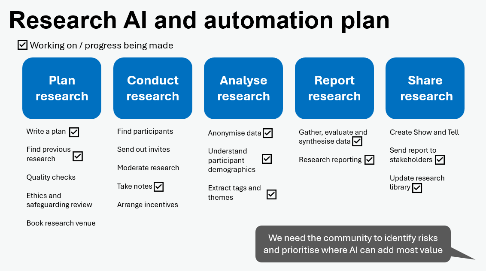

UCD Ops & AI-Enabled User Researchers
Following on from last monthnote about building a User Research Finder, this monthnote is continues along the theme of AI usage at NHS England.
What is UCD Ops?
One of the biggest challenges we have is that outside our immediate colleagues, teams and stakeholders, among the wider organisation User-Centred Design (UCD) Ops (Research + Design Ops) is not that well understood.
In brief, UCD Ops includes all the infrastructure that underpins quality, productivity for the whole User-Centred Design profession and, utlimately, enabling the successful delivery of Digital Data and Tech projects.

We are highly-collaborative and work closely with our Heads of Profession on the UCD Strategy, this influences and directs how teams across the organisation work.
We work very closely with our community to understand their needs and resolve those. This may be through onboarding, training, coaching, procurement of software, hardware, or building inhouse solutions.
We connect the dots between all the internal functions: Tech, IG, Finance, Commercial, Procurement, Estates, Cyber, Comms, and more. We navigatie all the gateways to bring forward the best solutions for our colleagues.
There are big challenges our team have been facing in the last two years, budget cuts, reduced headcount, increased number of projects, increased complexity of projects, decreased wellbeing.
Our tiny team already manage around 30 live products and services. As delivery teams cut back on staff too, there is increased pressure to take on (even) more centrally.

AI-first and Automation strategy
AI and automation are the number one topic at the moment. In every team, and in every funding request.
Earlier this year, Keir Starmer stated that:
“No person’s substantive time should be spent on a task where digital or AI can do it better, quicker and to the same high quality and standard.”
While the adoption of AI promises to transform how every team in the NHS works, modernising and standardising our processes, automating tedious tasks, it is not necessarily a quick win.
We are leaning into AI, but AI might add more pressure: We have to learn / retrain, while still deliver the day job.
We have been working with our research community to understand where AI can help most with tasks. And experimenting with a variety of AI-enabled tools and services.

This approach is not without risks, AI can be fickle, biased, or hallucinate… we are working closely to document and mitigate these risks.
User Research Finder
After completing the second round of research about our UR Finder, we’ve received some great feedback. My favourite quote of the month came up in our UR Finder Onboarding research.
“…the aliens are already here… they are in the room… and they are actually really useful!”
To increase awareness, we’re workin on more comms efforts both internally to increase uptake and also attending a variety of events and speaking with x-gov departments to share our learnings.
There is still much more to do to support UR Finder adoption, it could take months or maybe a year… but we will get there.
UR Finder - teams are enthusiastic, but concerned about what happens with data they upload. Tribal fears. Teams worry about losing control communications, who has access to their research? what if they get cut out of the conversation?
The AI-first debate
Teams are reporting, that if they want to get funding, they need to prioritise AI-enabled solutions
Every product team wants to be more empathetic, customer-centric, user-centred, human. But do we need more efficienicy? o r more humans?
Big consultancies cutting staff who ‘can’t be retrained’ to work with AI (https://ia.acs.org.au/article/2025/learn-ai-or-get-out–accenture-.html)
Consultancies producing reports that are incorrect (https://fortune.com/2025/10/07/deloitte-ai-australia-government-report-hallucinations-technology-290000-refund/)
A researcher won’t need a team to sit for seven hours starting at an a virtual whiteboard board full of virtual post-it notes.
- Does it take away some of the fun and collective benefit of conducting research? of course.
- Does it risk introducing some bias, that the AI will provide a bad recommendation? of course.
- Does it increase expectations across our stakeholders that research is quick and throwaway? of course.
But given the context to drive forward AI, and the pressures teams are under to deliver. It is absolutely inevitiable that teams will lean into AI to achieve their end objectives.
Do we want to hire a team of consultants to do this at XYZ cost? Or can we achieve a decent quality in-house report?
What is an “AI-Enabled Researcher?”
There is a sweet-space somewhere between User Research and Data-Science professions. Requiring a deep understanding of quantitative, qualitative research, as well as being able to technically implement data workflows (databases, analytics and stats).
AI-enabled researchers will drive transformation over the next 10 years.
Quality - Standards, templates and operating procedures
Scaled - build it once, repeat
Fast - let the AI analyse and summarise
Accurate - quality in, quality out
Integrate - Connect the dots in business processes
Connect - More time to focus on building relationships
Growth - Learning-orientated, flexible and improvement-orientated
I think with the rapid upskilling, e.g. coding, video editing, content creation… this is breaking down role siloes that would formerly be done by colleagues in specialisms: data, developers, comms, etc.
Are the NHS workforce team looking at extending JD / roles profiles to consider multidisclipinary nature of roles in an age of ai powered employees?
I know many people are now doing much more, the JD doesn’t at all represent the new scope of the role and skills required